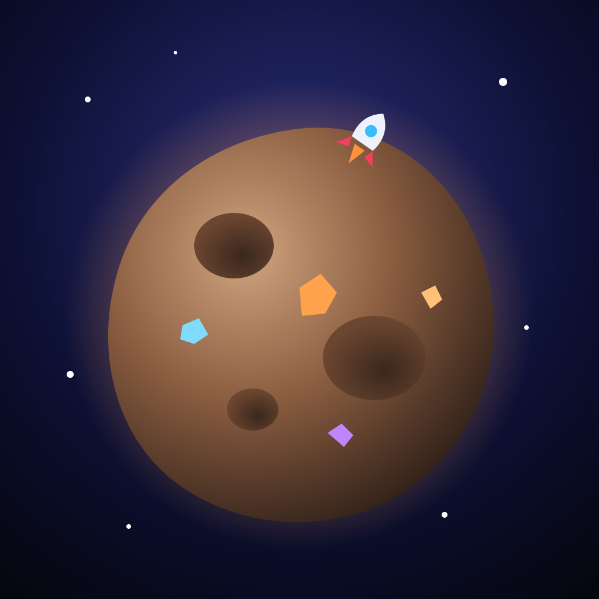

Astro Tycoon
Mina asteroides, gestiona tu energía y conviértete en el magnate de la galaxia.
Juego de gestión de recursos para móvil: construye taladros y refinerías, equilibra la energía de tu base, vende en un mercado que no para de moverse y salta a nuevos sectores del espacio.
Próximamente en Google Play y App Store.
Soporte
¿Dudas, problemas con una compra o sugerencias? Escríbenos a franmorales.dev@gmail.com.
Si una compra no aparece, abre Ajustes → Restaurar compras dentro del juego.
Privacidad
El juego no pide registro y guarda tu partida solo en tu dispositivo. Lee la política de privacidad (English).